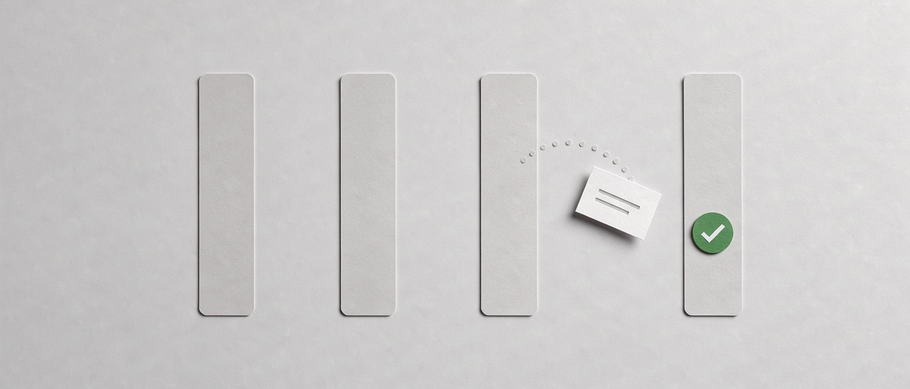
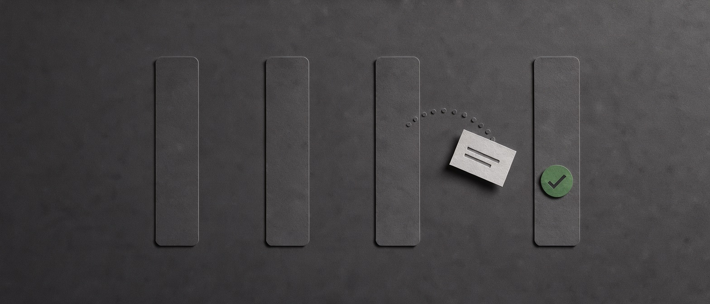
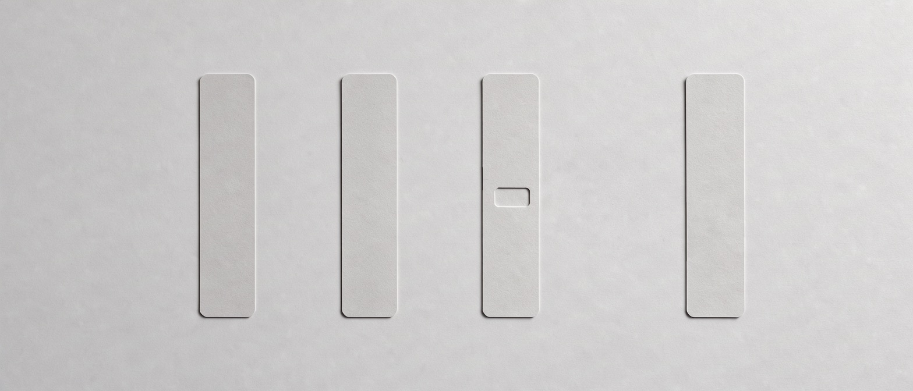
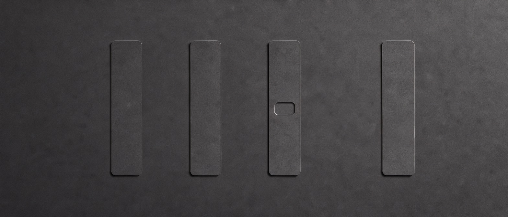

release-mechanism-based-on-git-tag.md moved from doing/ to done/.
Its agent log is still open beside it.
The tag path is in and cargo test --release passes. v-prefixed tags still resolve; the changelog is untouched.


release-mechanism-based-on-git-tag.md is no longer in any column. It was deleted, or renamed outside iboard.
release-mechanism-based-on-git-tag.md moved from todo/ to ready/.
release-mechanism-based-on-git-tag.md moved from doing/ to done/.